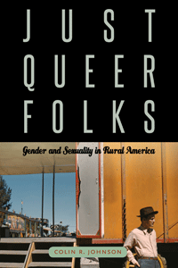

<body bgcolor="#FFFFFF" text="#000000" link="#0000FF" vlink="#CC0000" alink="#CC0000"><center><hr width="350" size="1" align="center" noshade>Uncovering the history of gender and sexual nonconformity in rural America during the first half of the twentieth century<hr width="350" size="1" align="center" noshade><p><a href="https://cdcshoppingcart.uchicago.edu/Cart/ChicagoBook.aspx?ISBN=9781439909973&&PRESS=temple" target="_top">Buy this book!</a> | <a href="https://cdcshoppingcart.uchicago.edu/Cart/Cart.aspx?PRESS=temple" target="_top">View Cart</a> | <a href="https://cdcshoppingcart.uchicago.edu/Cart/Cart.aspx?PRESS=temple" target="_top">Check Out</a></p><p></p></center><!--none//--><h1>Just Queer Folks</h1>
<H2>Gender and Sexuality in Rural America</H2>
<h3>Colin R. Johnson</h3>
<P>cloth 1-4399-0997-0 $85.50, Jun 13, <FONT COLOR=#990033>Available</FONT>
<br>paper 1-4399-0998-9 $33.95, Jun 13, <FONT COLOR=#990033>Available</FONT>
<br>Electronic Book 1-4399-0999-7 $32.95 <FONT COLOR=#990033>Available</FONT>
<BR> 264 pp
6x9
4&nbsp;figures 18&nbsp;halftones
</P><BLOCKQUOTE><I>"</I>Just Queer Folks<I> is a superb work of scholarship—an extraordinary achievement. An exciting, path-breaking book on the history of gender and sexuality in the United States, it opens new analytical ground in spaces often overlooked, during a period previously understudied. Colin Johnson mines a broad range of primary documents to interrogate the invention of sexuality in nonmetropolitan America over the first half of the twentieth century. His prose is elegant, lively, and engaging; the scholarship is rigorous; and the theoretical interventions are important. This book will be discussed and consulted for years to come."</I>
<br>&#151<b>John Howard</b>, Professor of American Studies at King's College London and author of <I>Men like That: A Southern Queer History</I></I></BLOCKQUOTE>
<P>Most studies of lesbian and gay history focus on urban environments. Yet gender and sexual diversity were anything but rare in nonmetropolitan areas in the first half of the twentieth century. <I>Just Queer Folks</I> explores the seldom-discussed history of same-sex intimacy and gender nonconformity in rural and small-town America during a period when the now familiar concepts of heterosexuality and homosexuality were just beginning to take shape.
<P>Eschewing the notion that identity is always the best measure of what can be known about gender and sexuality, Colin R. Johnson argues instead for a queer historicist approach. In so doing, he uncovers a startlingly unruly rural past in which small-town eccentrics, "mannish" farm women, and cross-dressing Civilian Conservation Corps enrollees were often just queer folks so far as their neighbors were concerned. Written with wit and verve, <I>Just Queer Folks</I> upsets a whole host of contemporary commonplaces, including the notion that queer history is always urban history.
<BR>&nbsp;<h2>Excerpt</h2><P>Excerpt available at <a href="http://www.temple.edu/tempress">www.temple.edu/tempress</a></p>
<BR>&nbsp;<h2>Reviews</h2>
<p><I>"Johnson follows the back roads of twentieth-century U.S. history, tracing same-sex desires and relations as they flourished in small towns, on homesteads, on farms, in work camps, and everywhere in between. Challenging the centrality of urbanization in narratives of queer identity formation, </I>Just Queer Folks<I> demonstrates the variety and range of sexual and gender expression in rural and small-town America. At a moment when the contours of gay and lesbian life are rapidly shifting, Johnson offers an original and fascinating account of the rural roots of contemporary queerness."</I><br>&#151<b>Heather Love</b>, R. Jean Brownlee Term Associate Professor of English at the University of Pennsylvania and author of <I>Feeling Backward: Loss and the Politics of Queer History</I>
<p><i>"Johnson posits that hetero-normalization was an early-20th-century phenomenon rooted in the discredited eugenics movement of its time and was a middle-class morality handed down from urban elites.... [He] doggedly decodes contrasting versions of 'Big Rock Candy Mountain' that hint at gay sex, and pores over pages of the journal of the Civilian Conservation Corps in the 1930s and 1940s to breathlessly report that gay people did, in fact, exist in rural areas."</i> <br>&#151<b><i>Publishers Weekly</b></i>
<p><i>"In this splendid book, Johnson teaches us to suspect received wisdom.... and dispel the notion that in the first half of the 20th century, same-sex intimacy and gender nonconformity were urban specific.... Johnson proves the worth of rigorous, scholarly interdisciplinary research.... VERDICT: This complex and original work should be read widely by all readers in its interrelated disciplines."</i> <br>&#151<b><i>Library Journal </b></i>
<p><i>"Colin Johnson’s pioneering book argues that the way we think about modern lesbian, gay and queer identity forms a kind of 'metro-chauvinism'.... Via carefully prepared case study after case study, Johnson shows us how largely poor and working-class men and women lived out their queer diversity </i>in situ<i>, and he argues that small towns and rural communities accommodated eccentricity and often protected 'their own'.... </i>In Just Queer Folks<i>, he both reorients a cliché of rural backwardness and challenges the convention that metropolitan gays somehow 'have it easy'. It is his political acuity, grounded in meticulous archival evidence, that makes this social history so good."</i> <br>&#151<b><i>Times Higher Education</b></i>
<p><i>"Johnson’s </i>Just Queer Folks<i> expands the repertoire of sources available to historians studying American sexuality and, most importantly, convincingly argues that a queer rural history requires greater attention for its contribution to the development of modern sexual identities, as well as resistances to them.... [H]is readings of 'hard women' portraits in particular display an agile working of queer historicism to chart new territory of historical investigation."</i> <br>&#151<b><i>Lambda Literary</b></i>
<p><i>"Grounded in queer theory and an interdisciplinary approach, Johnson carefully challenges and qualifies assumptions that problematic sexualities and behaviors found freedom of expression only in cities. In nonmetropolitan regions across the US in the first half of the 20th century, primary sources including film, fiction, graphic images, government commissions, police surveillance, and scientific studies revealed a variety of sexual behavior and gender roles for rural (mostly white) folks, despite heteronormative prescriptions..... [A] fascinating study.... Summing Up: Recommended."</i> <br>&#151<b><i>CHOICE</i></b>
<p><i>"Johnson has produced a book that is both well-reasoned and readable, an expedition into an often neglected area of gay and lesbian history."</i> <br>&#151<b><i>The Gay & Lesbian Review Worldwide</b></i>
<p><i>"</i>Just Queer Folks<i> provides a powerful corrective to the faulty assumption that gender and sexual nonnormativity and rurality are incompatible.... Taken as a whole, the book succeeds in mapping the wide range of queer practices that were commonplace for men in rural America. Further, the range of sources Johnson draws on is impressive and thus the book serves as an exemplar for scholars seeking to do queer historicism." </I><br>&#151<b><i>Gender & Society</b></i>
<p><i>"[A] fascinating and gracefully composed dialogue between queer theorists and historians of rural America that expands the geography of queer theory.... Johnson finds that rural Americans at the beginning of the last century did not necessarily subscribe to rigid notions of gender and sexual behavior.... Johnson writes with tremendous sensitivity about queer cultures among working men, hoboes, and the “hard women” of Farm Security Administration portraits who operated on the peripheries of femininity defined by access to consumer goods.... [T]he beauty of Johnson's work is that it is truly synthetic. By focusing on a few well-selected examples he reminds readers that he is building new theoretical foundations. For example, to see [John] D'Emilio in conversation with Mary Neth, a historian of rural women, one realizes that such dialogues are long overdue.... [T]he lively narrative in </i>Just Queer Folks<i> is accessible to readers from a variety of fields."</I> <br>&#151<b><i>The Journal of American History</b></i>
<p><i>"Johnson's </i>Just Queer Folks<i>...offers a queer history of rural America, as well as an account of the normalizing national practices that transformed the countryside into the center of vicious normalcy... elegantly written and flush with class consciousness.... </i>Just Queer Folks<i> provides a powerful impetus to further inquiry."</I> <br>&#151<b><i>The Journal of American Culture</b></i>
<p><i>"Johnson draws from the early twentieth century to amass the impressive archive of country queerness that challenges both the political Right’s and the mainstream gay and lesbian community’s image of American rurality.... It is his ability to read the expanse of rural America that makes Johnson’s book an extraordinary contribution to what he recognizes as the 'rural turn' in queer studies over the last decade.... One of Johnson’s most astute contributions to the rural turn is his ability to explain the difficulty for scholars to breach the rural–urban divide.... Johnson’s book is an accomplishment of seeing beyond established boundaries of queer studies, to the queer folks who have established lives 'out there,' in the unknowns of rural America."</I> <br>&#151<b><i>Women & Performance: a journal of feminist theory, 2014</b></i>
<p><i>"In this book Johnson takes to task many of the central assumptions historians and others make about gender and sexuality in America: that rural spaces were especially heteronormative; that queer people were typically progressive; that queer behavior was uncommon in rural places; that Americans' discourse about sexuality developed in cities and later spread to the countryside; and that the twentieth century witnessed a gradual increase in the erotic, emotional, and political possibility with regards to gender and sexuality. To these assumptions Johnson brings a wealth of evidence to the contrary.... It is difficult to do justice to either the sweeping claims or the nuanced insights that enliven the pages of this book in such a short review. It suffices to say, though, that the field has been waiting for this book. Elegantly written, forcefully argued, heterodox but also humane, </i>Just Queer Folks<i> is a model of historical scholarship."</I> <br>&#151<b><i>American Historical Review</b></i>
<p><i>"Johnson’s book adds to the growing rural queer scholarship that challenges long held arguments that 'rural' represents a negative foil to American cities for gay men and women.... [H]e challenges our reliance on rural-urban and hetero-homosexual divides to reveal a more complex history of queer America.... Throughout this well-argued book, Johnson connects urban and rural sexuality, dispels long held arguments about sexual identity and behavior, and demonstrates that—contrary to popular and historiographical belief—rural queerness has always existed."</I><br>&#151<b><i>Agricultural History</b></i>
<p><i>"What makes Johnson’s book so valuable is that it exemplifies the possible scope and weight of agricultural history…. </i>Just Queer Folks<i> demonstrates what a compelling, lively, and overall vital field of study rural history is. It reminds agricultural historians to analyze their own internalized metronormative gaze and explore new topics. Furthermore, Johnson’s work prompts all historians and scholars of gender, sexuality, environment, identity politics, and many others to consider the importance of rural life in American history."</I><br>&#151<b><i>The Journal of Critical Thought and Praxis</b></i>
<p><i>"Filling a notable scholarly gap, </i>Just Queer Folks<i> appropriately critiques the almost unilateral urban focus of most scholarship on queer life in America. But it does much more. Instead of offering a social history of gay and lesbian life in rural districts, the book focuses on how changing understandings of sexuality and gender across the nation during the twentieth century affected rural people's understandings of same sex behavior and gender nonconformity.... illuminating."</I><br>&#151<b><i>The Middle West Review</b></i>
<p><i>"Johnson makes a significant contribution.... </i>Just Queer Folks<i> offers a rich and beautiful account...it is a depiction that expands the archive of queer history and adds substantially to the new work on queer rurality, and does so while preserving the integrity of the rural landscapes and communities in which their stories unfold. It is a compelling read...and offers a unique and important intervention in American queer and rural history."</I> <br>&#151<b><i>QED: A Journal in GLBTQ Worldmaking</b></i>
<p><i>"Colin R. Johnson’s excellent book, </I>Just Queer Folks<I> is a crucial corrective to this [nonmetropolitan] cartography of desire precisely because it upends many of the commonsense assumptions both historians and the public make about how space and sexuality have been historically entwined.... Undergirding this history is an incisive commentary on the spatial categories that stabilize many social histories of sexuality in the United States.... </I>Just Queer Folks<I> is particularly compelling in the context of recent efforts to bridge histories of sexuality with histories of North American chattel slavery and settler colonialism.... Johnson’s most important contribution, then, is to expose the contingency and fluidity of gendered and sexual arrangements within the spatial peripheries of North American settler colonialism.... </I>Just Queer Folks<I> delivers this insight in charming prose, and it musters vivid and fascinating examples for the cause. But it is ultimately a halting, vital, and portable political insight.... </i>Just Queer Folks<i> provides a timely reminder about the unexpected roots of American sexuality, and it should be read widely by scholars of sexuality as well as anyone interested in the contemporary politics of food, agriculture, and the environment."</I> <br>&#151<b><i>The Journal of the History of Sexuality</b></i>
<p><i>"Because Johnson anticipates readers’ critiques and honest questions, this fascinating book serves as a much-needed and comprehensively researched introduction to the rural turn in queer studies. It deftly synthesizes previous work, concretizes key debates with clear examples and prose, breathes life into archival and anecdotal evidence, and provides a vivid tour of how queer practices—not identities—were gradually rather than automatically disdained. The anti-identitarian impulse allows for a complex narrative history that avoids anachronistically labeling people gay while encouraging readers to recognize an always-already queer America. </i>Just Queer Folks<i> thus paves the way for scholars not only to seek out lived experiences of queers in unexpected times and places—a project that can result in slumming and voyeurism. It also sets the stage for continued inquiry into when and how nonnormative sexual practices and gender expressions became unqueered by moral reforms, conservative campaigns, economic structures, and discursive formations that use 'the rural' to their political advantage."</I> <br>&#151<b><i>American Studies, Vol. 54, No. 4</b></i>
<p><i>"Colin R. Johnson offers a much-needed corrective to the urban-centered nature of research on queer life.... </I>Just Queer Folks<I> is a beautifully written romp through early twentieth-century rural America. It upends many assumptions undergirding knowledge about American gender and sexuality, including the 'great gay migration' narrative. While the end product of this discursive transformation was a heteronormative narrative of gender and sexuality, the establishment of such a narrative was by no means a smooth or uncontested process. By detailing this process, </i>Just Queer Folks<i> joins a movement to fill a gap in gender and sexuality studies, a field that neglects the rural." </I> <br>&#151<b><i>Contemporary Sociology</b></i>
<BR>&nbsp;<h2>Contents</h2><P>
<p>Acknowledgments
<br>Introduction</p>
<p><b>Section I</b>
<br>1. Life Science: The Agrarian Origins of American Sexuality
<br>2. Town and Country: Country Life and the Nationalization of Middle-Class Morality</p>
<p><b>Section II</b>
<br>3. Casual Sex: Homosociality, Homosexuality, and the Itinerant Working Poor
<br>4. Community Standards: Village Mentality and the Queer Eccentric
<br>5. Camp Life: The Queer History of “Manhood” in the Civilian Conservation Corps
<br>6. Hard Women: Rural Women and Female Masculinity</p>
<p>Conclusion: Mansfield, Ohio
<br>Notes
<br>Bibliography
<br>Index</p>
</P><BR>&nbsp;<H2>About the Author(s)</H2>
<P><b>Colin R. Johnson</b> is Associate Professor of Gender Studies and Adjunct Associate Professor of American Studies, History, and Human Biology at Indiana University Bloomington.</P>
<BR><H2>Subject Categories</H2>
<p><A HREF="/tempress/gender.html" TARGET="_top">Gender Studies</a>
<BR><A HREF="/tempress/sexual.html" TARGET="_top">Sexuality Studies/Sexual Identity</a>
<BR><A HREF="/tempress/history.html" TARGET="_top">History</a>
</p>
<BR><h2 class="inpageheading">In the series</H2>
<P><I><a href="http://www.temple.edu/tempress/sexual_studies.html" onMouseOver="window.status='Click for other books in this series!'; return true;" onMouseOut="window.status=''; return true;" target="_top">Sexuality Studies</a></i>, edited by Janice Irvine and Regina Kunzel.
</p><p><i>Sexuality Studies</i>, edited by Janice Irvine and Regina Kunzel, features work in sexuality studies broadly construed, in its social, cultural, and political dimensions, and in both historical and contemporary formations. The series includes titles located within disciplinary and interdisciplinary frames that combine theoretical methodologies with empirical research.</p>
<p align="center"><a href="https://cdcshoppingcart.uchicago.edu/Cart/ChicagoBook.aspx?ISBN=9781439909973&&PRESS=temple" target="_top">Buy this book!</a> | <a href="https://cdcshoppingcart.uchicago.edu/Cart/Cart.aspx?PRESS=temple" target="_top">View Cart</a> | <a href="https://cdcshoppingcart.uchicago.edu/Cart/Cart.aspx?PRESS=temple" target="_top">Check Out</a></p><p><font face="Arial" size="1"><a href="copyright.html" onMouseOver="window.status='Web Copyright Policy';return true;" onMouseOut="window.status=''" title="Web Copyright Policy">&copy;</a> 2017 <a href="http://www.temple.edu" target="new" onMouseOver="window.status='Link to Temple University home page';return true;" onMouseOut="window.status=''" title="Link to Temple University home page">Temple University</a>. All Rights Reserved. http://www.temple.edu/tempress/titles/2262_reg.html</font></p>